One question decides almost every answer in this topic: is blood struggling to get in, or struggling to get out. Get that right and the position, the ulcer and the treatment follow.
This topic is built on one discrimination. Is blood struggling to get into the leg, or struggling to get out.
Everything else follows from that answer. The colour, the temperature, the pulses, the ulcer, the position, the treatment. Get the axis wrong and every downstream answer is wrong with it.
Points get lost here in three predictable ways.
Elevation is good nursing in most contexts. In arterial disease it is harmful. You are asking blood to climb uphill into a limb that already cannot get enough.
This is the most tested intervention in the topic. Fix the rule in your head now, or it stays a coin flip.
Then a scenario gives you a warm brown swollen leg with a palpable pulse. You cannot say which system failed. The findings are not one list. They are two, and they oppose each other point for point.
Sudden pain in a cold, pale, pulseless foot is not worsening PAD. It is an acute occlusion, and the limb has about 4 to 6 hours.
The wrong answer is to order an ABI. Testing something that is already obvious costs the limb.
For every condition below, you should be able to say four things with the book closed: the one-sentence definition, the clue you would actually see in a patient, the priority nursing action, and the first-line treatment with its teaching point.
If you cannot say all four out loud, you do not know it yet. Familiarity is not recall.
| Condition | Definition in one sentence | Clue in the scenario | Priority action | First-line treatment |
|---|---|---|---|---|
| PAD | Atherosclerosis narrows the leg arteries, so blood cannot get in. | Cool pale foot, weak or absent pulses, cramping calf pain when walking. | Legs down. Protect the limb from trauma and heat. | Smoking cessation and a walking program. Antiplatelet therapy. |
| Chronic venous insufficiency | Failed valves let blood pool, so blood cannot get out. | Warm swollen leg, brown staining, ulcer at the medial malleolus. | Legs up, above heart level. | Graduated compression, 30 to 40 mmHg. Check the ABI first. |
| DVT | A clot forms in a deep vein, usually in the leg. | Unilateral swelling, warmth, calf pain. One leg, not both. | Anticoagulate. Watch for sudden dyspnea, which means PE. | LMWH or a DOAC. Teach the bleeding precautions. |
| Acute arterial occlusion | An embolus or thrombus shuts a leg artery all at once. | Sudden severe pain, cold pale pulseless foot. The 6 P's. | Call the provider now. Leg dependent, nothing by mouth, no heat. | Emergent embolectomy, thrombolysis, or bypass. |
Write these four rows on one index card, by hand. Cool and pulseless means arterial, so legs down. Warm and brown means venous, so legs up. One swollen leg means clot. Sudden and cold means emergency. That card is most of the exam.
Arteries carry oxygenated blood out under high pressure. Their walls are thick and muscular, and they constrict and dilate to control flow.
Veins carry blood back under low pressure. Their walls are thin. They contain one-way valves, and they cannot push on their own.
| Arterial wall layer | What it is | Why it matters |
|---|---|---|
| Tunica intima | A single layer of endothelial cells | Smooth surface for flow. This is where atherosclerosis starts. |
| Tunica media | Smooth muscle and elastic fibres | Constricts and dilates. This layer holds the pressure. |
| Tunica adventitia | Connective tissue | Structural support. Anchors the vessel to what surrounds it. |
Veins in the leg have to move blood uphill with no pump of their own. The calf muscle is the pump. Each contraction squeezes the deep veins and pushes blood upward. The valves stop it falling back.
So immobility is not just uncomfortable. It switches off half of venous return. That is the mechanism behind every DVT prevention order you will ever carry out.
Always compare left to right. Document on the 0 to 4+ scale. Present on one side and absent on the other is the finding. The absolute strength matters less.
Arterial supply runs common femoral, then superficial femoral down the thigh, then popliteal behind the knee. Below the knee it splits three ways. The anterior tibial becomes the dorsalis pedis. The posterior tibial and the peroneal take the rest.
Venous drainage has three parts. Deep veins run alongside the arteries and carry most of the return. Superficial veins are the great saphenous on the inside and the small saphenous behind. Perforating veins connect the two, with valves that should only let blood move inward.
Discrimination axis: is blood failing to get in, or failing to get out.
This is the pair the whole topic rests on. Learn it as two opposing columns, not as one list of vascular findings.
Cause: atherosclerosis, embolism, or spasm. The result is ischemia.
Pain gets worse when the leg goes up, and better when it hangs down.
Cause: incompetent valves or obstruction. The result is venous hypertension.
Pain gets better when the leg goes up, and worse when it hangs down.
Position. Ask what happens when the leg goes up.
Arterial pain worsens with elevation, because you removed the gravity that was helping blood arrive. Venous pain improves with elevation, because you added the gravity that helps blood leave.
That one question also gives you the intervention. Arteries carry blood out, so keep the leg down. Veins bring blood back, so raise it up.
Discrimination axis: where it sits, and what the wound bed looks like.
| Feature | Arterial ulcer | Venous ulcer |
|---|---|---|
| Location | Toes, heels, lateral malleolus, pressure points | Medial malleolus, the gaiter area, lower leg |
| Wound bed | Pale, dry, necrotic. May have eschar | Red, beefy, granulating. Moist with exudate |
| Borders | Well defined, punched out | Irregular and shallow |
| Pain | Severe. Worse at night and with elevation | Mild to moderate ache. Better with elevation |
| Surrounding skin | Shiny, thin, hairless, cool | Brown stained, warm, dermatitis, edema |
| Pulses | Diminished or absent | Usually normal |
A dry punched-out ulcer on a toe is arterial. A wet irregular ulcer on the inside of the ankle is venous. Those two sentences answer most ulcer questions on their own.
Blank paper. Two columns, arterial and venous. Seven findings each, from memory. Then write the ulcer location and which way the leg goes. Check afterwards. The rows you missed are the rows the exam will use.
PAD is atherosclerosis outside the heart and brain, usually in the legs. It is the same process as coronary artery disease, in a different vessel.
Patients with PAD carry a 6 to 7 times higher risk of cardiovascular death. The plaque in the leg tells you what the coronary and cerebral arteries look like.
So a PAD diagnosis is a reason to assess coronary and stroke risk. It is not just a leg to treat.
Smoking is the strongest modifiable factor, ahead of everything else on the list.
| Major | Contributing |
|---|---|
| Smoking | Hyperhomocysteinemia |
| Diabetes | Chronic kidney disease |
| Hypertension | Elevated CRP and inflammation |
| Hyperlipidemia | Obesity |
| Age over 50 | Sedentary lifestyle |
PAD progresses in a fixed order. Knowing where a patient sits tells you how urgent the situation is.
Claudication is exercise-induced ischemia of leg muscle. Four features define it.
Discrimination axis: gradual is a disease; sudden is an emergency.
An embolus or an acute thrombus can shut a leg artery in minutes. This is not severe PAD. It is a different clock.
The limb has roughly 4 to 6 hours before the damage is irreversible.
Notify the provider immediately. Put the leg dependent, so gravity helps arterial flow. Keep the patient nothing by mouth for likely surgery. No heat, no cold, no elevation, no compression. Expect embolectomy, thrombolysis, or bypass.
The trap answer here is to obtain an ABI. An ABI is a diagnostic test for a chronic problem. The foot is already cold and pulseless. You have your diagnosis. Testing it costs time the limb does not have.
The ankle-brachial index compares the pressure in the ankle to the pressure in the arm. It takes a Doppler and a cuff. Nothing is invasive. It is the primary test for PAD.
The logic is simple. Ankle pressure should be at least as high as arm pressure. If it is lower, something upstream is restricting flow.
Right ankle: DP 100, PT 110. Left ankle: DP 90, PT 95. Right arm 120, left arm 118.
Right ABI is 110 divided by 120, which is 0.92. That is borderline.
Left ABI is 95 divided by 120, which is 0.79. That is mild to moderate PAD.
Note that both legs used 120, the higher arm pressure. Only the ankle value changes between legs.
| ABI | What it means | What you do |
|---|---|---|
| Over 1.30 | Non-compressible vessels | Calcified arteries, seen in diabetes and CKD. The ABI is unreliable. Use a toe-brachial index. |
| 1.00 to 1.30 | Normal | No significant PAD. |
| 0.91 to 0.99 | Borderline | Possible early disease. Consider an exercise ABI. |
| 0.41 to 0.90 | Mild to moderate PAD | Claudication is typical here. Risk factor modification, exercise, medication. |
| 0.40 or less | Severe PAD | Critical limb ischemia. Rest pain and tissue loss. Urgent vascular referral. |
Over 1.30 does not mean excellent circulation. It means the artery is too calcified to compress. The cuff then reads a falsely high pressure.
It happens in exactly the patients most likely to have severe PAD. Diabetes and chronic kidney disease. Use a toe-brachial index instead, because toe arteries calcify far less.
Compression stockings are the treatment for venous disease. Put them on a leg with an ABI under 0.5 and you can cut off what little arterial supply is left.
So the ABI is not only a PAD test. It is the safety check before any compression order goes on a leg.
Chronic venous insufficiency is what happens when leg veins cannot return blood efficiently. The usual cause is damaged valves, often after a previous DVT.
Four mechanisms drive it. Valves fail and blood refluxes backward. An old clot obstructs the channel. The calf muscle pump weakens. Pressure builds, and that venous hypertension pushes fluid and red cells out into the tissue.
Every skin finding below is downstream of that last step.
| Finding | What you see | Why it happens |
|---|---|---|
| Edema | Pitting, worst at the end of the day, better overnight | Pressure drives fluid out of the capillaries |
| Varicose veins | Dilated twisted superficial veins | Valve failure and venous dilation |
| Hemosiderin staining | Brown or reddish skin | Red cells leak out and their hemoglobin breaks down |
| Stasis dermatitis | Red, scaly, itchy skin that may weep | Inflammation from sustained venous pressure |
| Lipodermatosclerosis | Hard fibrotic skin. The leg looks like an inverted champagne bottle | Chronic inflammation turning into fibrosis |
| Venous ulcer | Shallow irregular ulcer at the medial malleolus | Tissue breaks down under chronic pressure |
Put the stockings on in the morning, before getting out of bed. An hour with the leg down and the edema is already there. Then you are compressing a leg that has swollen.
Fit matters. A stocking that is too tight is a tourniquet. Replace them every 3 to 6 months, because the elastic gives out.
Check the ABI first. Under 0.5, compression is contraindicated.
A deep vein thrombosis is a clot in a deep vein, usually in the leg. The danger is not the leg. It is what happens if a piece breaks off and reaches the lungs.
Virchow's triad names three conditions. Most patients who clot have more than one.
| Factor | What it means | Where you see it |
|---|---|---|
| Venous stasis | Blood slows or stops moving | Immobility, paralysis, long flights, long surgery, heart failure |
| Endothelial injury | The vessel lining is damaged | Surgery, trauma, IV catheters, previous DVT, vasculitis |
| Hypercoagulability | Blood clots more readily than it should | Cancer, pregnancy, oral contraceptives, Factor V Leiden, dehydration |
Read a surgical patient through the triad and all three are usually present at once. Stasis from the operating table, injury from the surgery, and hypercoagulability from the inflammatory response.
Both legs swollen is usually heart failure, kidney disease or liver disease. One leg swollen is a clot until proven otherwise.
Calf pain on dorsiflexion is unreliable in both directions. It is absent in most people who have a DVT. It is present in plenty who do not.
It also asks you to squeeze a leg that may contain a clot. It is not part of current practice, and it is not the answer.
If the clot breaks loose it travels to the lungs. Watch for:
The word that matters is sudden. A DVT patient who becomes acutely short of breath has a PE until proven otherwise. Activate rapid response.
Preventing DVT is nursing work more than medical work. The orders come from the provider; whether they actually happen is down to you.
Every admitted patient gets a VTE risk assessment. The common tools are the Padua score for medical patients and the Caprini score for surgical ones.
| Risk level | Who it describes | What they get |
|---|---|---|
| Low | Minor surgery, patients who are walking | Early ambulation |
| Moderate | General surgery, medical illness on bed rest | Drug or mechanical prophylaxis |
| High | Hip or knee replacement, major trauma, cancer surgery | Drug and mechanical prophylaxis together |
| High bleeding risk | Active bleeding, recent neurosurgery | Mechanical only |
Notice the last row. A patient who cannot be anticoagulated is not a patient with no prophylaxis. Mechanical methods carry the whole load.
| Drug | Typical dose | What you watch |
|---|---|---|
| Unfractionated heparin | 5,000 units subcut every 8 to 12 hours | Short half-life, reversed with protamine. Monitor platelets for HIT. |
| Enoxaparin | 40 mg subcut daily | Low molecular weight heparin. More predictable. Adjust the dose if creatinine clearance is under 30. |
| Fondaparinux | 2.5 mg subcut daily | Factor Xa inhibitor. Contraindicated if creatinine clearance is under 30. No HIT risk. |
| Rivaroxaban | 10 mg orally daily after surgery | Oral factor Xa inhibitor. Convenient, but reversal options are limited. |
The name says low platelets. The danger is clotting.
HIT antibodies activate the platelets they consume, so the patient throws clots while the count falls. It happens more with unfractionated heparin than with LMWH.
All heparin means all of it, including flushes and coated lines.
Two diseases, two opposite sets of orders. The most common error in this topic is applying one set to the other patient.
| Treatment | What it is for | What you watch |
|---|---|---|
| Anticoagulation, initial | Stop the clot extending and prevent PE | LMWH, a heparin infusion, or a DOAC. Monitor for bleeding. aPTT for unfractionated heparin. |
| Anticoagulation, long term | Prevent it happening again | Warfarin with an INR of 2 to 3, or a DOAC. At least 3 months. Teaching is the whole job here. |
| Thrombolysis | Dissolve a large clot | Catheter-directed for iliofemoral DVT. High bleeding risk, so intensive monitoring. |
| IVC filter | Catch clots when anticoagulation is contraindicated | It does not treat the DVT and it does not replace anticoagulation once that becomes possible. |
| Compression | Reduce edema and prevent post-thrombotic syndrome | Start after the acute phase. Graduated stockings for 2 years or more. |
Strict bed rest for DVT used to be standard. The theory was that walking would dislodge the clot. The evidence went the other way.
Once anticoagulation is therapeutic, early walking does not raise PE risk, and it clears leg symptoms faster. Current guidance is early ambulation with compression for most patients.
The exception is a massive iliofemoral DVT or a patient who is hemodynamically unstable. Check your facility protocol, but do not keep a stable anticoagulated patient in bed by reflex.
The exercise prescription surprises people. You are telling a patient to walk into the pain on purpose. Controlled ischemia drives collateral growth, which is why the program works.
Arterial: down. Level or dependent. Gravity is helping blood arrive. Elevation makes the ischemia worse.
Venous: up. Above heart level. Gravity is helping blood leave. Dependency makes the edema worse.
Arteries carry blood out, so keep the leg down. Veins bring blood back, so raise it up.
These should be automatic. If you have to reason toward one of them, it is not learned yet.
| Number | Meaning |
|---|---|
| 1.00 to 1.30 | Normal ABI |
| 0.91 to 0.99 | Borderline ABI |
| 0.41 to 0.90 | Mild to moderate PAD |
| 0.40 or less | Critical limb ischemia |
| Over 1.30 | Calcified vessels. The ABI is unreliable, so use a toe-brachial index |
| Under 0.5 | ABI at which compression is contraindicated |
| Over 20 percent | ABI drop after exercise that means significant PAD |
| 4 to 6 hours | Window before an acute arterial occlusion causes irreversible damage |
| Over 3 seconds | Abnormal capillary refill |
| 10 minutes | Supine rest before an ABI is measured |
| 200 metres | Claudication distance dividing Fontaine stage IIa from IIb |
| 6 to 7 times | Higher cardiovascular death risk in PAD |
| 30 to 40 mmHg | Graduated compression for venous insufficiency |
| 3 to 6 months | How often compression stockings are replaced |
| 60 percent | DVT reduction from SCDs, while they are running |
| 2 hours | SCDs off long enough to lose the benefit |
| 5,000 units | Prophylactic unfractionated heparin, every 8 to 12 hours |
| 40 mg daily | Prophylactic enoxaparin |
| Under 30 | Creatinine clearance requiring dose change or avoidance of LMWH and fondaparinux |
| Over 50 percent, or under 100,000 | Platelet fall that means suspect HIT |
| 5 to 14 days | When HIT typically appears after starting heparin |
| INR 2 to 3 | Warfarin target for DVT |
| 3 months minimum | Anticoagulation duration after a DVT |
| 30 to 45 minutes, 3 times a week | Supervised walking program for claudication |
Write the ABI ranges on the back of the index card from section 02. Test yourself on the meaning, not the number; the exam gives you the number and asks what it means.
Reading this again will not move your score. Producing it will. Everything below is done with the page shut.
Pick any condition from section 02. Without looking, say the one-sentence definition, the clue you would see in a patient, the priority action, and the first-line treatment with its teaching point.
If you can do that for all four, you are ready. If you cannot, you know exactly which section to reopen.
8 questions with full rationales covering arterial versus venous disease, ABI interpretation, DVT management, and acute arterial occlusion. Choose Practice Mode for instant feedback or Exam Mode to simulate test conditions.
Arterial is cool, pale, pulseless, worse with elevation
Venous is warm, brown, swollen, better with elevation
Arterial legs go down. Venous legs go up
ABI is 1.0 to 1.3 normal, 0.40 or less critical, over 1.30 falsely high
ABI under 0.5 means no compression on that leg
Claudication is predictable and eases on standing still
Acute occlusion is the 6 P's and a 4 to 6 hour window
Virchow's triad is stasis, endothelial injury, hypercoagulability
Sudden dyspnea in a DVT patient is a pulmonary embolism
Falling platelets on heparin means clotting, so stop the heparin